Префектура Тояма · Такаока · где остановиться и поесть
Канаямати в Такаоке: ночь в доме литейщиков и ужин на посуде местных мастеров
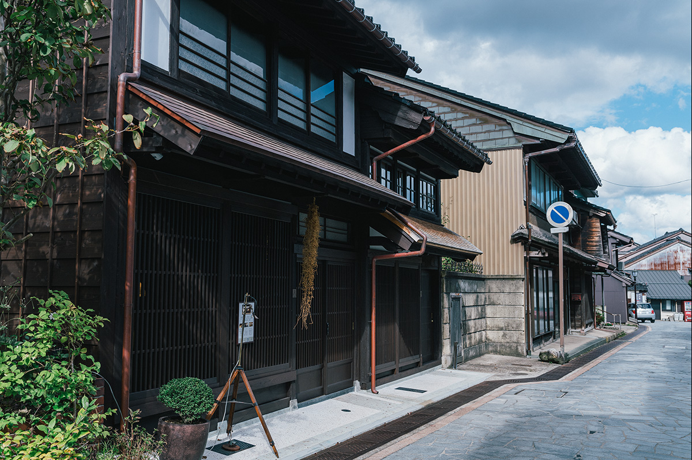
Канаямати, квартал с решётчатыми домами и мощёной улицей, считают колыбелью литья Такаоки. Здесь можно снять целый столетний дом, где ешь и пьёшь из местной бронзы, а в том же квартале поужинать у повара, который вернулся в родной город, чтобы готовить его вкус.
Квартал
Канаямати: откуда пошло литьё Такаоки
Такаока, город в префектуре Тояма, известен ремёслами: бронзовым литьём и лаковой посудой. Город вырос вокруг замка, который построил Тосинага Маэда, и литьё здесь не прекращается уже больше 400 лет.
Канаямати самый старый квартал Такаоки: именно сюда Тосинага Маэда первым делом позвал семь литейщиков. Сегодня это охраняемый государством исторический квартал с решётчатыми фасадами и каменной мостовой. Его любят снимать для кино и рекламы, но это не музей под открытым небом: здесь живут люди.
Где остановиться
«Канэ-но сандзун»: дом, где пользуются бронзой
Мотомаса Ёцукава вырос в Канаямати и руководит компанией «Ёцукава сэйсакусё», которая делает изделия из бронзы и меди. Он долго думал, что может сделать для своего квартала именно он, и в декабре 2020 года открыл «Канэ-но сандзун», дом, который сдают целиком одной компании гостей. Название получили, разобрав на части иероглиф «литьё».
Под гостиницу перестроили два соединённых между собой дома, которым около ста лет. Снаружи им вернули традиционный облик, а внутри к старому дереву добавили местные техники, новые материалы и немного смелых решений.
«Я хотел, чтобы в этом доме чувствовалась бронза Такаоки. Когда пользуешься настоящей посудой из бронзы, понимаешь, чем она хороша. Пусть она станет частью повседневной жизни»
Мотомаса Ёцукава, владелец
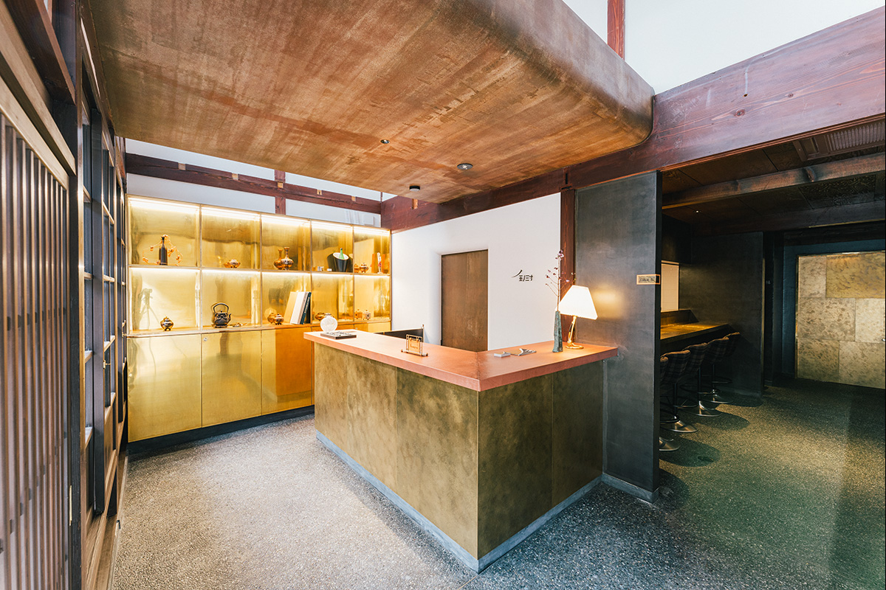
«Канэ-но сандзун» состоит из двух частей. В «Хати» («Восемь») могут жить до восьми человек, в «Цуки» («Луна») до четырёх.
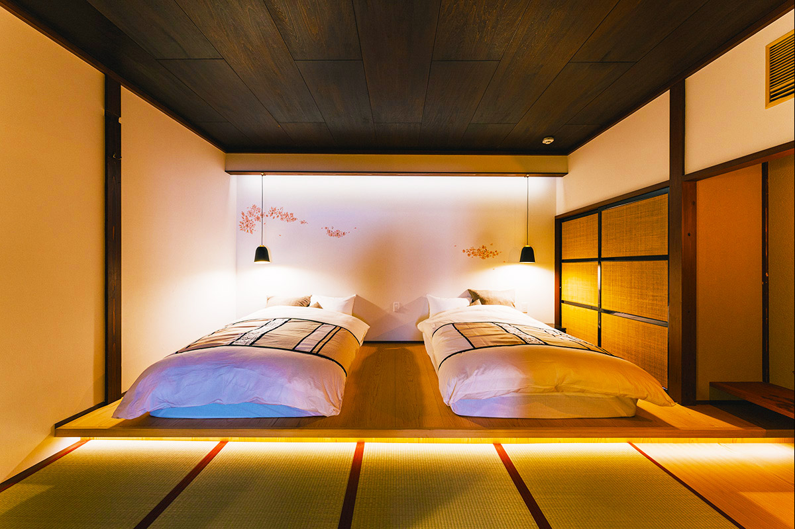
В столовой «Хати» выставлены работы литейщиков, и обстановка там почти роскошная. На втором этаже продуманная непрямая подсветка и низкая мебель настраивают на отдых, а тишина, которой не бывает в больших туристических местах, и заставляет сюда возвращаться.
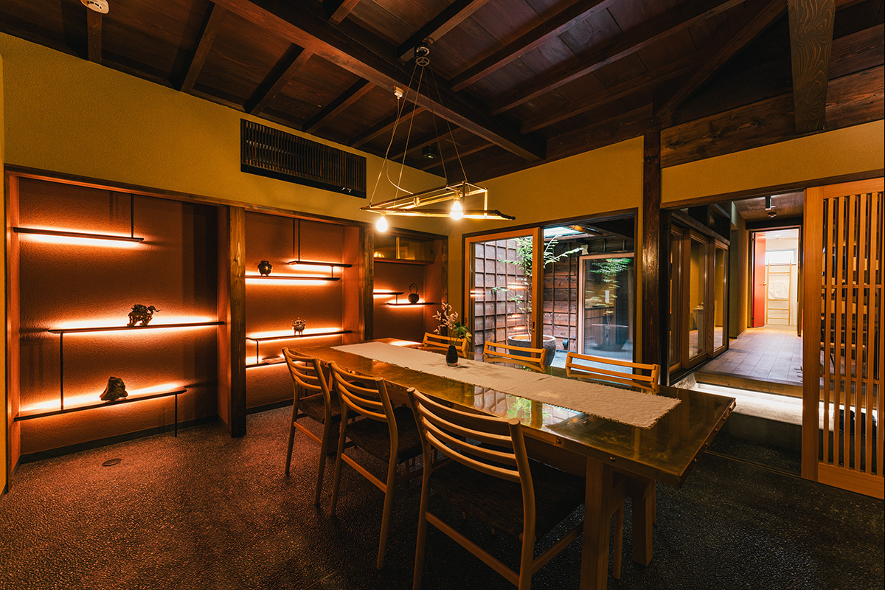
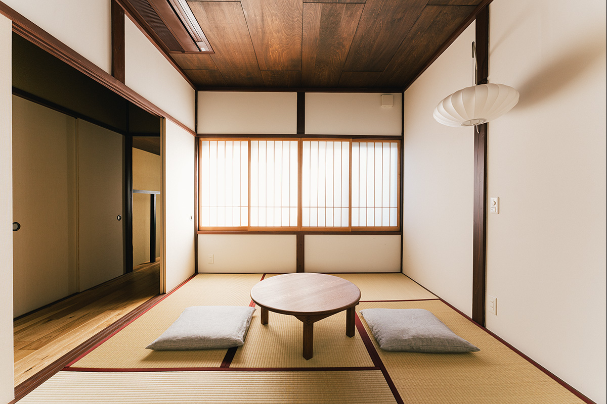
В старом японском доме спрятано много находок. Наверху лестницы стену нарочно сделали неровной, и в её выступах как бы между делом стоят изделия из бронзы. На кухне собраны вещи, которые может сделать только компания, работающая с металлом: всё время, пока живёшь в доме, можно пользоваться посудой и бокалами из серии KISEN «Ёцукава сэйсакусё».
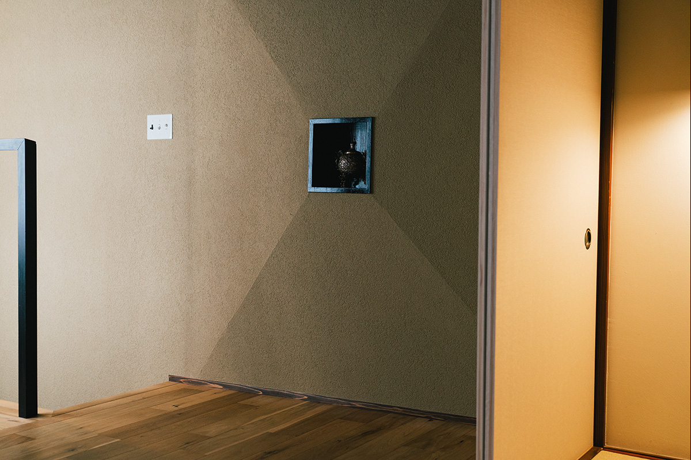
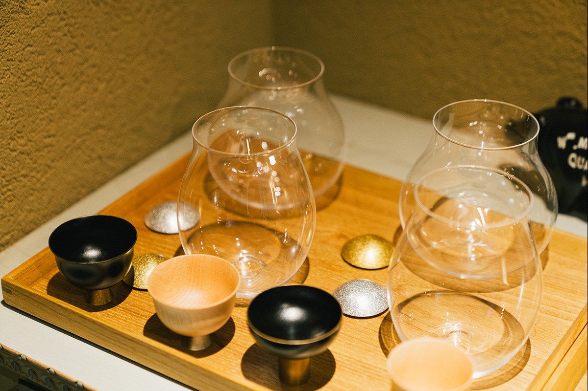
Дом рассчитан и на долгое проживание. Кухни есть в обеих частях: холодильник, микроволновка, индукционная плита и много посуды. Ванная комната современная и удобная, такая просторная, что в ней спокойно помещается вся семья, а принадлежности для ванной подобрали бережные для кожи.
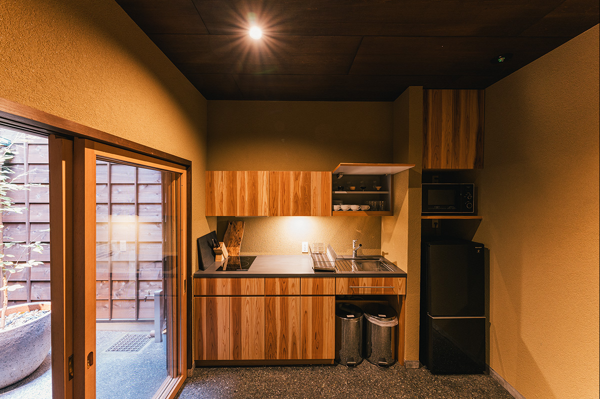
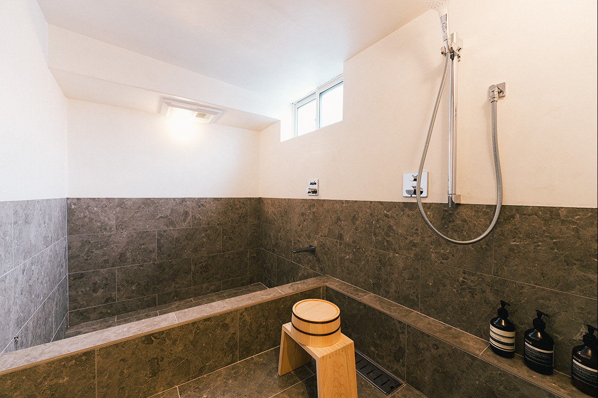
Свой дом владелец видит началом перемен для всего квартала.
«Хочется, чтобы и соседи сказали: хорошо, что здесь появилась гостиница. Мне нужна не толпа, а улица со своим характером. Можно не спеша поговорить с хозяевами лавок, почувствовать историю, самому попробовать что-то сделать руками. Такаоку можно узнавать по-разному, и я хочу показывать её отсюда»
Мотомаса Ёцукава, владелец
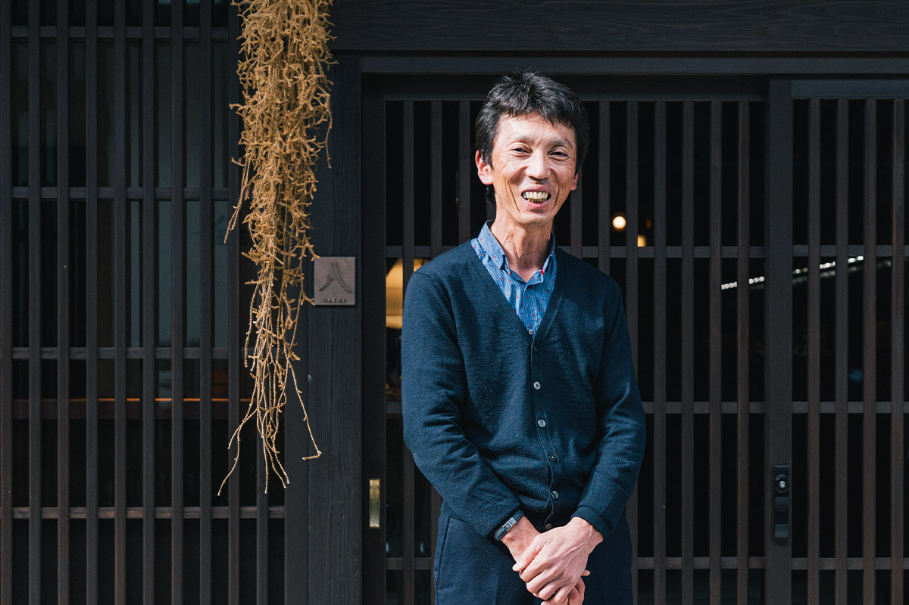
«Канэ-но сандзун»
- Адрес
- префектура Тояма, Такаока, Канаямати, 4-12
- Телефон
- +81 80-5859-6343
- Цены / Вход
- от 51 000 иен за дом за ночь, с налогом; до 8 человек
- Заезд / выезд
- 16:00 / 11:00
- Сайт
- kanenosanzun.jp
Где поесть
«Сарё Никока»: японская кухня на посуде Такаоки
На углу Канаямати, в доме с решётчатым фасадом у каменной мостовой, работает ресторан японской кухни «Сарё Никока». Сколько бы раз ни заходил сюда, за занавесом у входа встречает всё то же мягкое тепло. Ресторан в 2015 году открыл повар Хаято Хаякава, уроженец Такаоки: сначала как кафе, а через год он стал рестораном японской кухни. До этого повар учился в известных ресторанах Осаки и в городе Такамацу на острове Сикоку.
«Ценность провинции я понял, когда уехал учиться в Такамацу. Есть продукты и обычаи, которые рождаются только в определённом месте. Когда решил открывать своё дело, думал и о Такамацу. Но выбрал Такаоку, потому что вкусы, которые я люблю и помню, это вкусы моего детства здесь»
Хаято Хаякава, повар
Окончательно он убедился в этом в 2013 году, когда приехал с гостем на «Итибамати», осенний праздник ремёсел, который проходит в Такаоке каждый год.
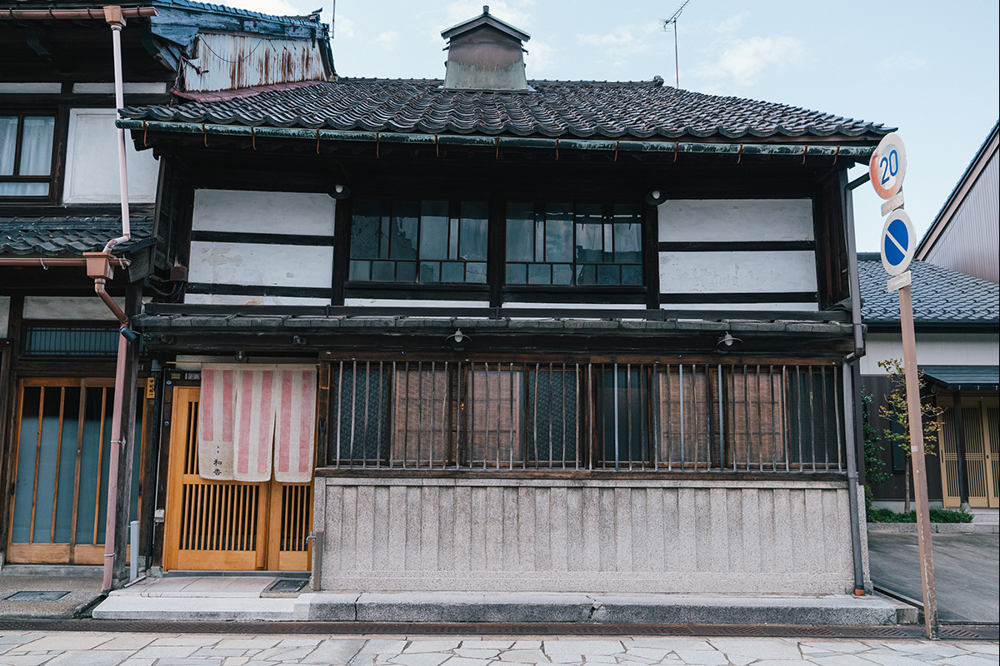
Хаякава называет свою кухню не «васёку», то есть японской едой вообще, а «нихон рёри», японской кухней в строгом смысле. У неё есть правила. Одно из них идёт от учения об инь и ян и пяти стихиях: всё на свете состоит из двух противоположных начал, которые уравновешивают друг друга. Другое называют «цветы, птицы, ветер и луна», оно о том, чтобы радоваться временам года, в том числе через посуду. На этих правилах строится каждое блюдо. Если держать нож с односторонней заточкой за рукоять прямо, две стороны лезвия показывают инь и ян. Круглая чаша на квадратной тарелке тоже инь и ян. С продуктами так же: из пяти вкусов, пяти цветов и пяти способов приготовления складывается целый мир блюда.
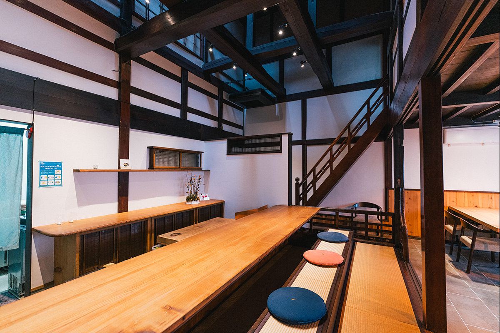
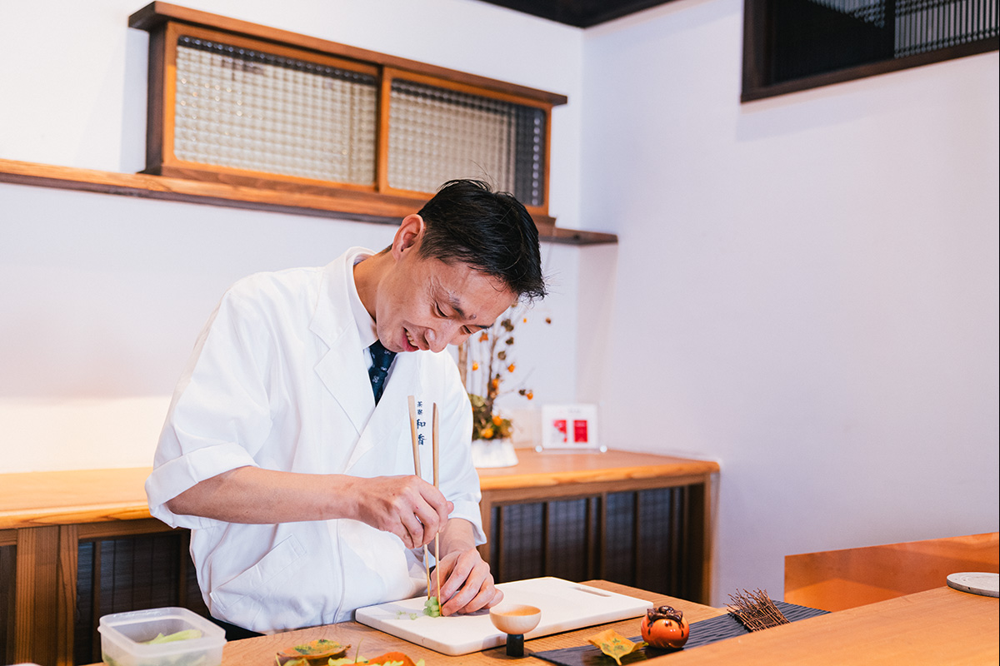
«Если подавать всё только на посуде Такаоки, правила могут разрушиться. Поэтому местная посуда у меня как акцент»
Хаято Хаякава, повар
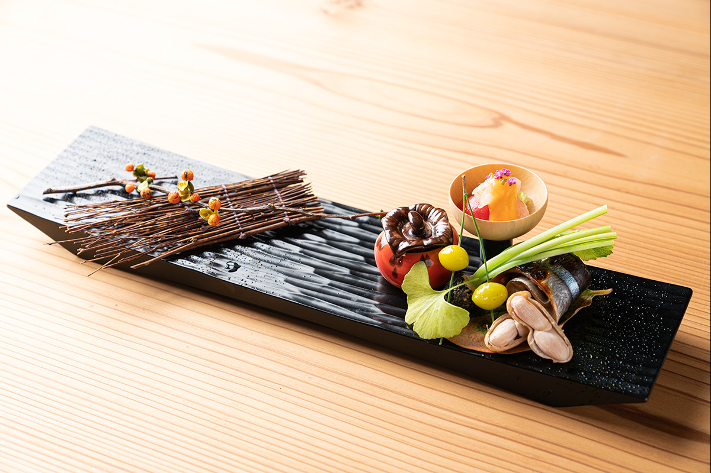
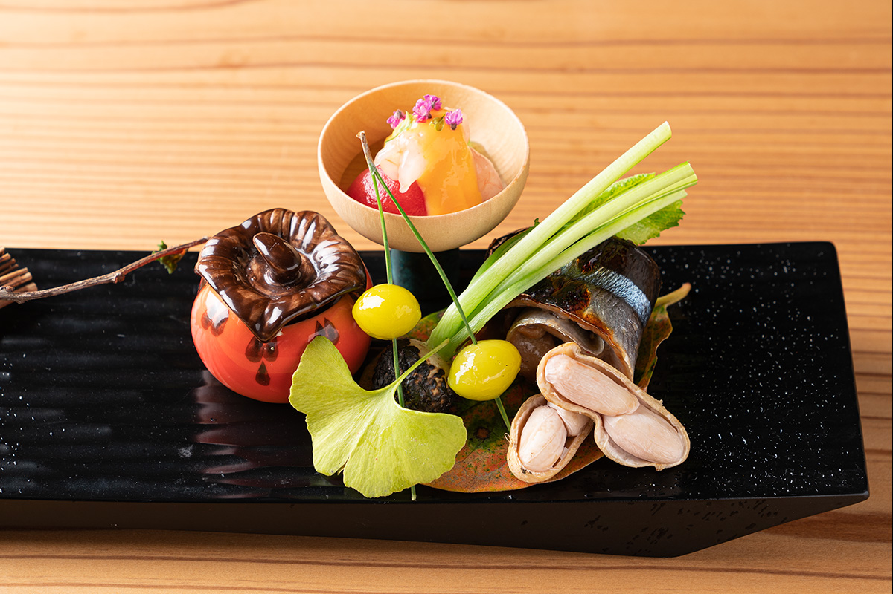
К 2021 году, через шесть лет после открытия «Сарё Никока», в Канаямати работали уже четыре заведения, и хозяева с ними дружат.
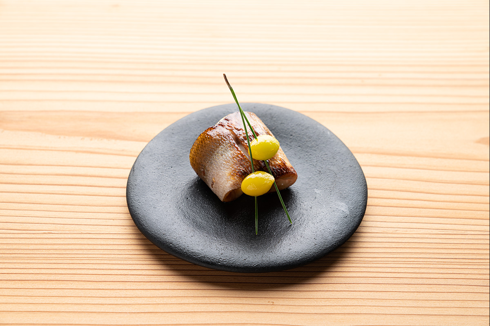
«Хорошо бы, чтобы выбора было больше. Я дорожу родными местами, но прежде всего я просто люблю людей. И продукты, и посуда, и те, кто их делает, это богатство Такаоки, и мне хочется их связывать»
Хаято Хаякава, повар
Повару, по его словам, подходит готовить под конкретных гостей: у каждого свои ожидания и настроение. Меню он составляет утром, и если увидит что-то вкусное, готовит, вспоминая лица тех, кто придёт.
«Если держать ресторан в Такаоке, то пусть он будет про культуру. Здешние жители сами говорят, что в городе ничего нет. А мне эта скромность кажется особым обаянием Такаоки»
Хаято Хаякава, повар
Это обаяние чувствуется и в его блюдах, и в его словах, и, наверное, поэтому сюда так тянет.
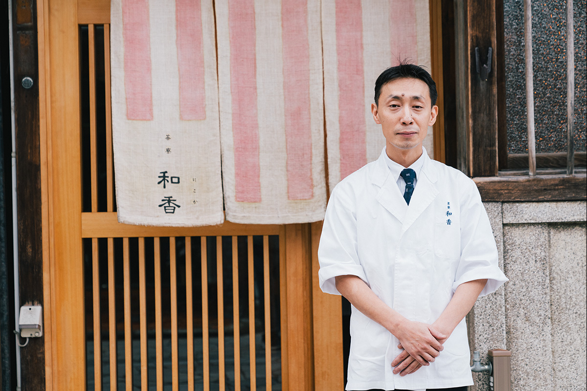
«Сарё Никока»
- Адрес
- префектура Тояма, Такаока, Канаяхонмати, 2-26
- Телефон
- +81 766-75-8529
- Часы работы
- 11:30–14:00, 18:00–22:00, бронь не позднее чем за 2 дня
- Выходные
- воскресенье, праздничные дни
Фото: Ацуси Ямахира.